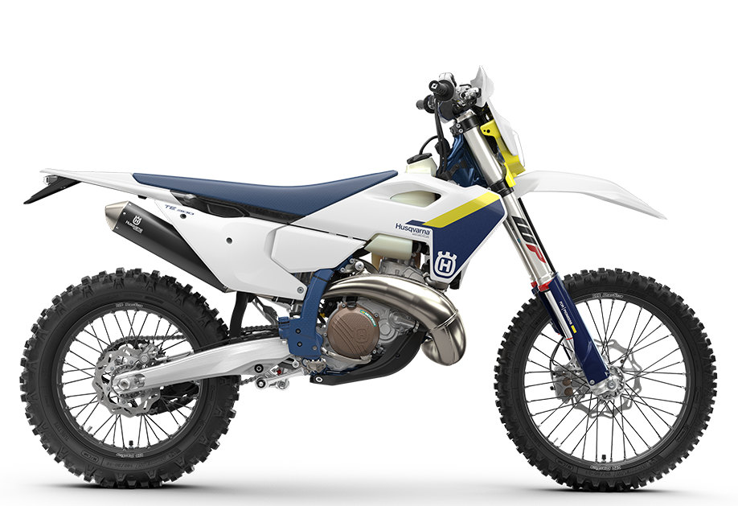
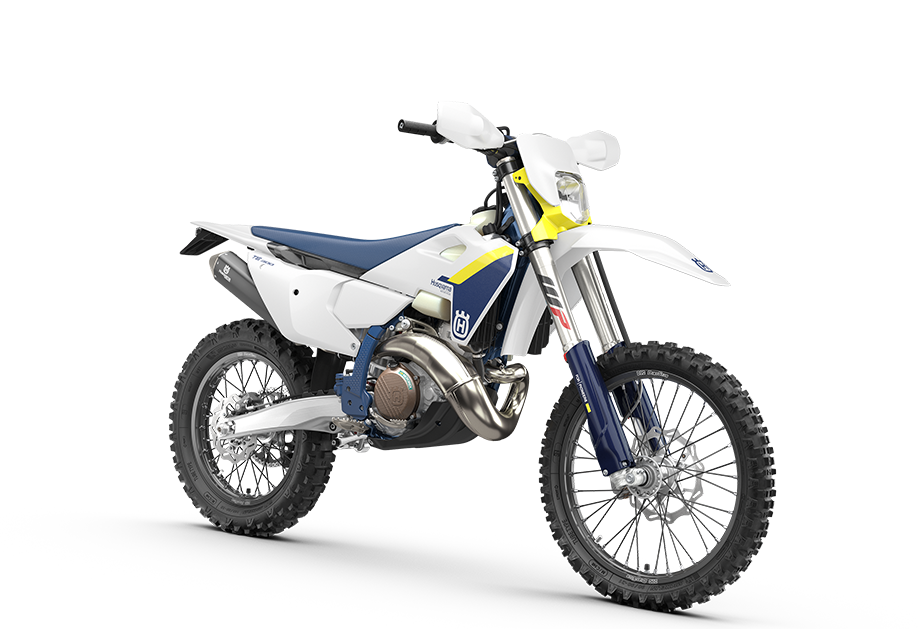
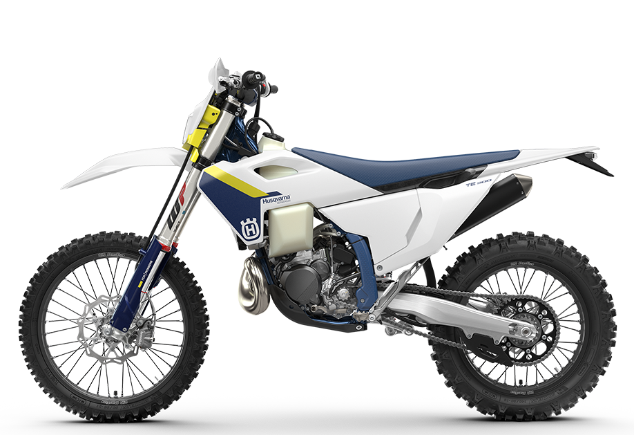

Husqvarna TE 300
- Kategorija: Enduro
- Brend: Husqvarna
- Kvačilo: Wet, DDS, Multi-disc, Brembo Hydraulics
- Menjač: 6-stepeni
- Težina: 106,8 kg
- Visina od tla: 343 mm
- Visina sedišta: 952 mm
- Zadnji disk: 220 mm
- Rezervoar: 8,5 l
O modelu: Husqvarna TE 300
Poznata širom sveta kao izuzetno sposobna mašina, posebno u svetu hard endura, TE 300 postavlja standarde za offroad performanse. Sa agregatom vodećim u klasi, koji koristi sistem ubrizgavanja goriva preko tela leptira (TBI) za preciznu kontrolu snage, ovaj svestrani model sa lakoćom savladava najteže uspone.
Iskustvo u vožnji dodatno poboljšava vrhunsko WP oslanjanje koje, zajedno sa modernom i prilagodljivom šasijom, pruža maksimalnu udobnost na svim tipovima terena. Na modelu TE 300, možeš istraživati predele gde su retki pre tebe prošli.